Pilar 01
People Development
Membangun kapasitas pemimpin urban muda Jakarta melalui pendidikan kebijakan, program mentoring, dan pertukaran pengetahuan lintas sektor. Kami percaya perubahan kota dimulai dari manusianya.
Membangun Jakarta sebagai kota global berkelanjutan melalui riset, kolaborasi, dan literasi urban.
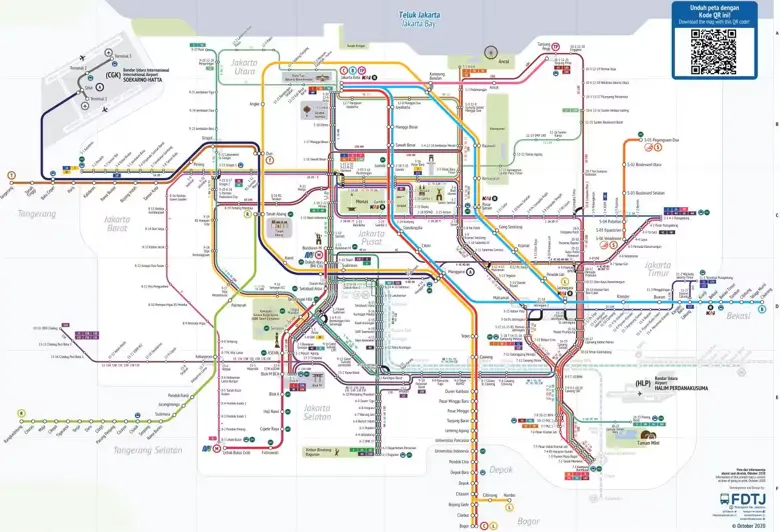
Perjalanan visual dari pelabuhan kecil di muara Ciliwung hingga metropolitan global — menuju puncaknya, 22 Juni 2027.
Arahkan kursor pada setiap simpul untuk melihat babak — sentuh di perangkat seluler.
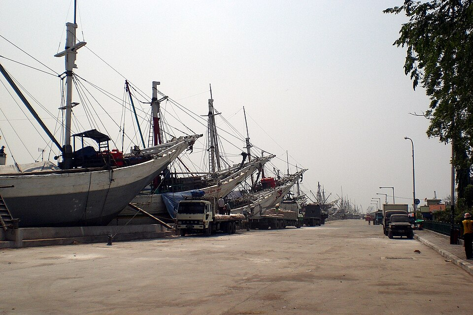
Dari Sunda Kelapa, muara Ciliwung menjelma menjadi simpul niaga Nusantara. Fatahillah merebut kota, lalu dinamai Jayakarta — fondasi yang menentukan arah lima abad ke depan.
Sunda Kelapa · Jayakarta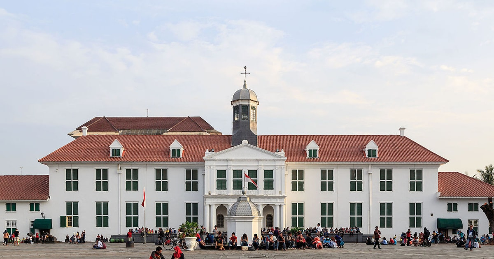
VOC mendirikan Batavia: kanal-kanal lurus, tembok kota, dan kotak-kotak blok ala Amsterdam tropis. Sebuah eksperimen urban yang meninggalkan jejak hingga Kota Tua hari ini.
VOC · Kanal · StadhuisKota meluas ke selatan — Weltevreden, Menteng, hingga rel kereta menghubungkan kampung dan kawasan elite. Identitas modern Jakarta mulai dirajut di antara trem dan jalan beraspal pertama.
Menteng · Trem · Stasiun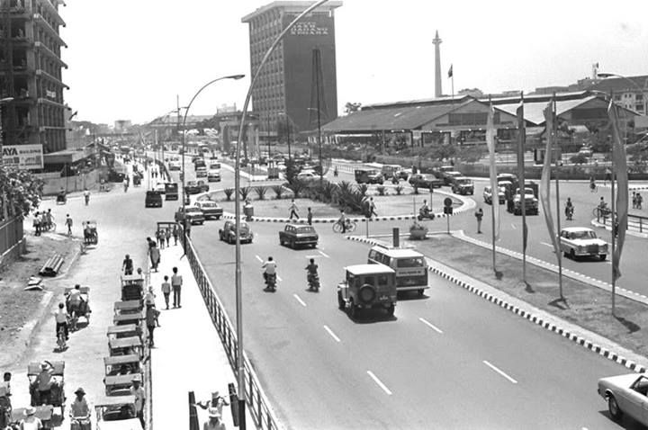
Ibu kota republik tumbuh vertikal: Monas, Sudirman–Thamrin, proyek mercusuar Soekarno, lalu pembangunan masif Orde Baru. Jakarta menjelma menjadi pusat ekonomi, politik, dan kebudayaan.
Monas · Sudirman · Thamrin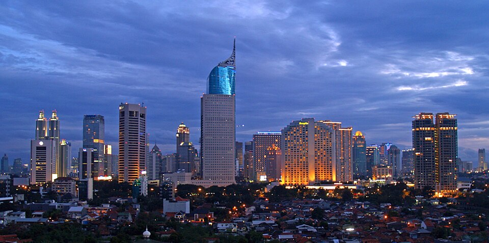
MRT, LRT, transformasi digital, dan reinterpretasi pusaka kota. Jakarta bersiap memasuki babak baru sebagai kota global di tahun 2027 — 500 tahun setelah Fatahillah.
MRT · SCBD · 2027Di balik setiap nama kawasan Jakarta tersimpan lapisan sejarah, ekologi, dan ingatan kolektif yang menunggu untuk dirayakan.
Enam warung dan restoran ikonik yang telah menjadi saksi bisu sejarah Jakarta — kini dinominasikan untuk Penghargaan Warisan Kuliner Urban 2026.
Bermula dari pikulan hingga menetap di Gondangdia, H. Ma'ruf menjadi penjaga autentisitas Soto Betawi selama lebih dari delapan dekade. Kuah santan gurih, daging sapi empuk, dan topping lengkap — setiap mangkuk adalah warisan budaya Betawi yang harus dilestarikan.
Lihat di Google Maps
Potret nyata keterlibatan komunitas, forum diskusi, dan eksplorasi ruang urban bersama Jakarta Study Club.
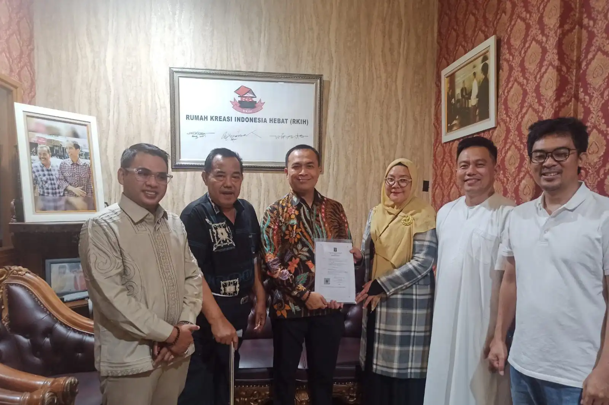
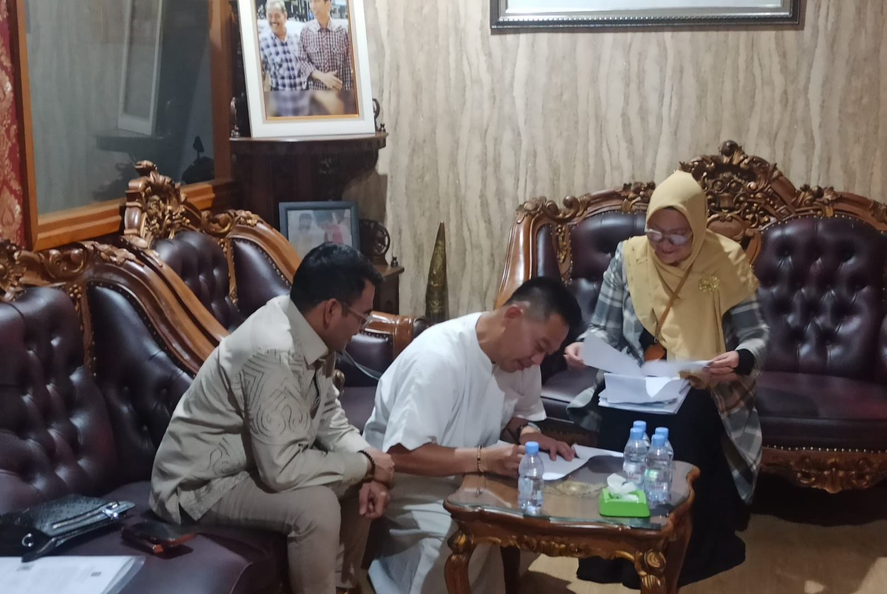
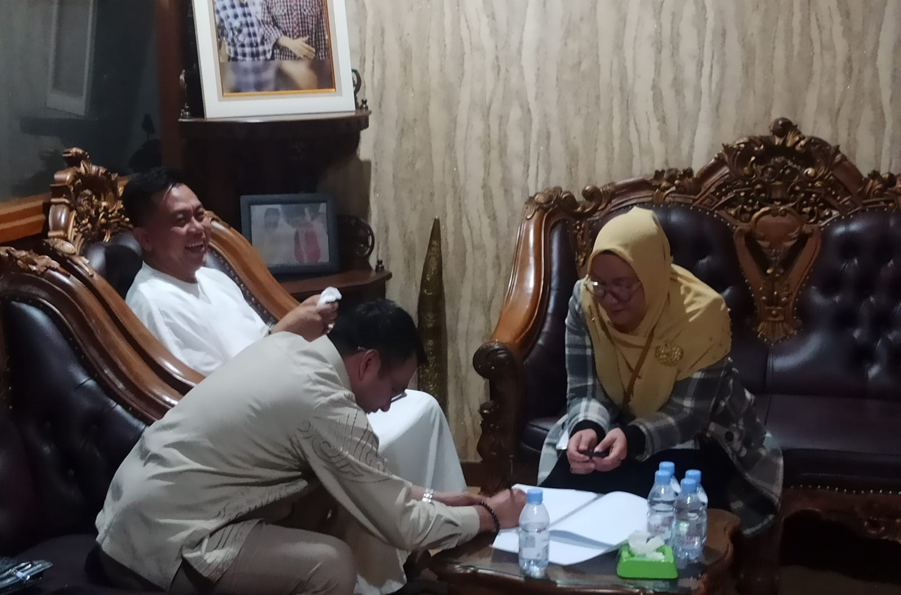
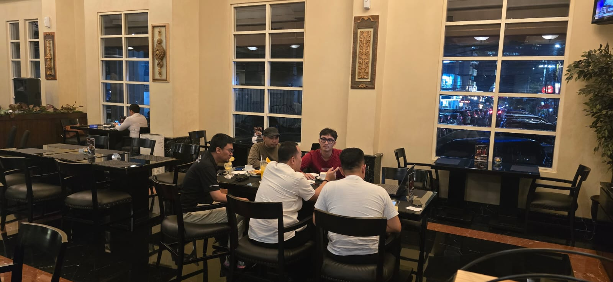
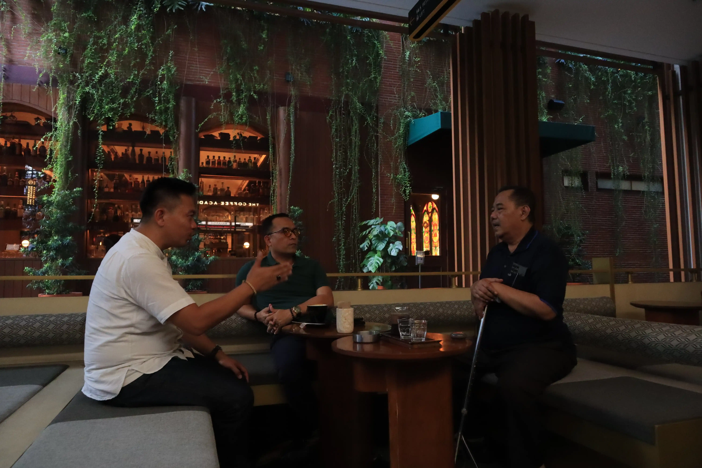
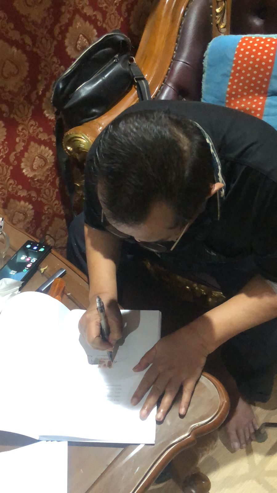
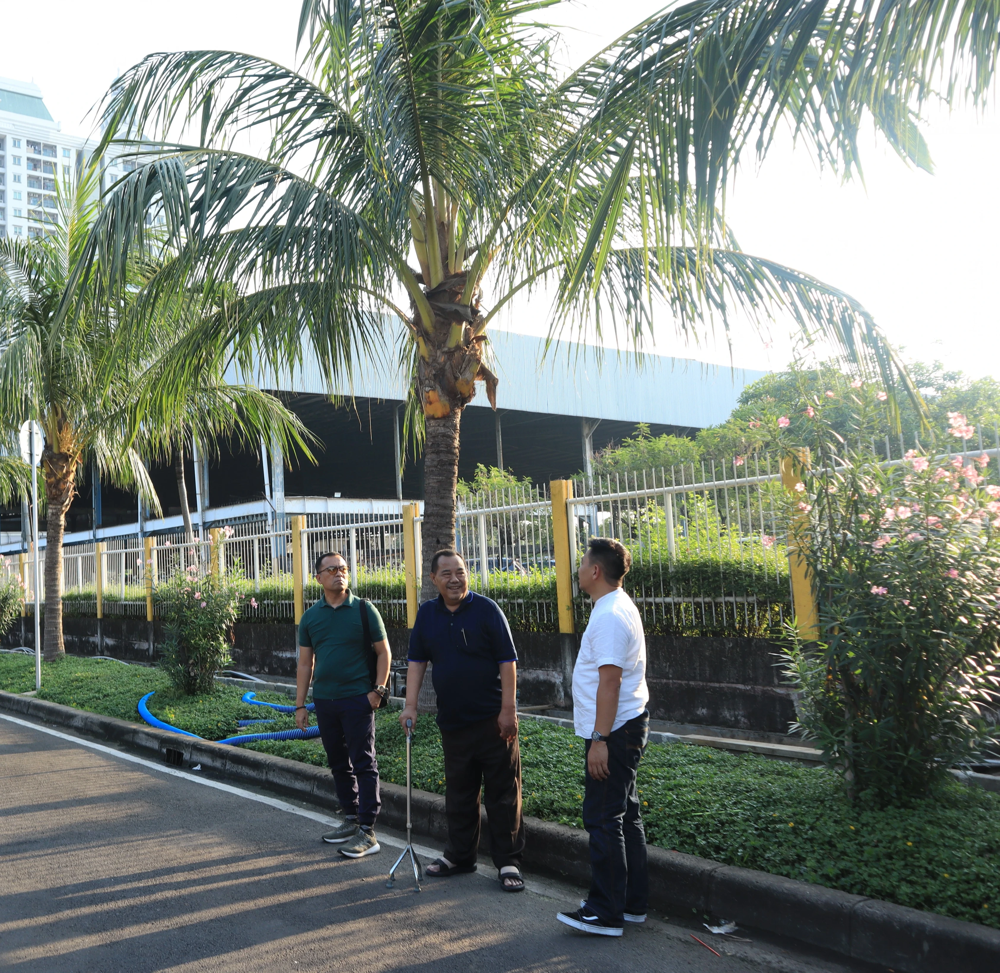
Jakarta Study Club hadir sebagai platform intelektual yang mengintegrasikan riset empiris, kebijakan berbasis bukti, dan partisipasi warga untuk mewujudkan Jakarta yang inklusif, berkelanjutan, dan berdaya saing global.
"Jakarta bukan hanya ibu kota — ia adalah cermin ambisi dan komitmen Indonesia kepada dunia."
Jakarta Study Club merupakan program riset dan advokasi dari Yayasan Jakarta Four Khatulistiwa — sebuah yayasan nirlaba yang berkomitmen pada pembangunan Jakarta yang berpusat pada manusia.
Setiap inisiatif yang kami jalankan berpijak pada tiga pilar utama yang saling menguatkan demi kemajuan Jakarta.
Membangun kapasitas pemimpin urban muda Jakarta melalui pendidikan kebijakan, program mentoring, dan pertukaran pengetahuan lintas sektor. Kami percaya perubahan kota dimulai dari manusianya.
Menghasilkan kajian, policy brief, dan rekomendasi berbasis data untuk mendukung pengambilan kebijakan kota yang inklusif, efisien, dan berorientasi masa depan — dari tata ruang hingga mobilitas urban.
Memposisikan Jakarta dalam diskursus kota global dengan menghubungkan perspektif lokal ke jaringan pemikiran urban internasional dan standar praktik terbaik kota-kota dunia kelas pertama.
Kami beroperasi melalui empat jalur utama yang saling melengkapi dalam ekosistem riset dan advokasi urban Jakarta.
Riset empiris berbasis data lapangan mengenai isu tata kota, mobilitas, dan kebijakan publik Jakarta.
Ruang deliberasi multistakeholder antara akademisi, praktisi, pemerintah, dan warga kota.
Penguatan kapasitas urban literasi melalui program edukasi publik, webinar, dan short course kebijakan kota.
Apresiasi terhadap inovasi dan kontribusi nyata individu maupun institusi bagi pembangunan Jakarta berkelanjutan.
Jakarta Study Club telah menjadi rujukan kebijakan dan referensi akademis bagi berbagai pemangku kepentingan kota.
"Mengapresiasi ketersediaan transportasi umum Jakarta yang kini setara dengan kota-kota besar dunia, dengan cakupan layanan mencapai 88,2 persen wilayah."
Baca tulisan"Meyakini posisi Jakarta sebagai pusat ekonomi, bisnis, dan perdagangan tidak akan tergoyahkan meskipun status ibu kota negara dipindahkan ke IKN."
Baca tulisan"Memuji pendekatan humanis Pemprov DKI Jakarta dalam merelokasi warga Kampung Bayam ke rusun, serta langkah tanggap darurat (gercep) dalam menangani banjir ibu kota."
Baca tulisanFakta, sejarah, dan data akurat tentang ruang-ruang ikonik Jakarta yang membentuk identitas ibu kota kita.
Jakarta Study Club
Tim kepemimpinan yang berdedikasi membangun ekosistem riset dan advokasi urban Jakarta yang berkelanjutan.
Temukan jawaban atas pertanyaan umum seputar Jakarta Study Club, program kami, dan cara bergabung atau berkolaborasi.
Baik Anda ingin hadir di acara penghargaan kuliner kami, bergabung sebagai peneliti/relawan, atau menjajaki kemitraan strategis, pintu kolaborasi selalu terbuka.
Isi formulir di bawah ini, tim kami akan merespons dalam 1–2 hari kerja.